|

|
(Terence teaches in University of San Francisco's MS in Data Science program. You might know Terence as the creator of the ANTLR parser generator.)
Contents
If both of these regularization techniques work well, you might be wondering why we need both. It turns out they have different but equally useful properties. From a practical standpoint, L1 tends to shrink coefficients to zero whereas L2 tends to shrink coefficients evenly. L1 is therefore useful for feature selection, as we can drop any variables associated with coefficients that go to zero. L2, on the other hand, is useful when you have collinear/codependent features. (An example pair of codependent features is gender and ispregnant since, at the current level of medical technology, only females can be ispregnant.) Codependence tends to increase coefficient variance, making coefficients unreliable/unstable, which hurts model generality. L2 reduces the variance of these estimates, which counteracts the effect of codependencies.
One of the key questions that I want to answer is: “Does L1 encourage model coefficients to shrink to zero?” (The answer is, Yes!) So, let's do some two-variable simulations of random quadratic loss functions at random locations and see how many end up with a coefficient at zero. There is no guarantee that these random paraboloid loss functions in any way represent real data sets, but it's a way to at least compare L1 and L2 regularization. Let's start out with symmetric loss functions, which look like bowls of various sizes and locations, and compare how many zero coefficients appear for L1 and L2 regularization:
|
|
|
Green dots represent a random loss function that resulted in a regularized coefficient being zero. Blue represents a random loss function where no regularized coefficient was zero (North, South, East, West compass points). Orange represents loss functions in L2 plots that had at least one coefficient close to zero (within 10% of the max distance of any coefficent pair.) L1 tends not to give near misses and so the simulation on the left is just blue/green. As you can see in the simulations (5000 trials), the L1 diamond constraint zeros a coefficient for any loss function whose minimum is in the zone perpendicular to the diamond edges. The L2 circular constraint only zeros a coefficient for loss function minimums sitting really close to or on one of the axes. The orange zone indicates where L2 regularization gets close to a zero for a random loss function. Clearly, L1 gives many more zero coefficients (66%) than L2 (3%) for symmetric loss functions.
In the more general case, loss functions can be asymmetric and at an angle, which results in more zeros for L1 and slightly more zeros for L2:

|

|
Because of the various angles and shapes, such as we saw in Figure 2.4, more of the regularized coefficients for both L1 (72%) and L2 (5%) constraints become zero. Also notice that there are a number of orange dots not clustered around the axes for L2; they are more spread out than for symmetric loss functions. This might not be a perfect simulation, I think it's good enough to get our answer: Yes, L1 regularized coefficients are much more likely to become zeros than L2 coefficients.
where  scales the bowl in the 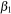 direction, 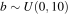 scales the 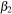 direction, 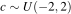 controls the amount of tilt/angle away from vertical or horizontal, and (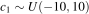,
scales the bowl in the 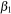 direction, 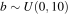 scales the 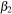 direction, 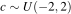 controls the amount of tilt/angle away from vertical or horizontal, and (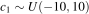, ) is the position in coefficient space of the minimum loss function value. 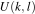 means uniform random variable between k and l.
) is the position in coefficient space of the minimum loss function value. 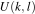 means uniform random variable between k and l.
On the other hand, we actually want to answer a more specific question: “Does L1 encourage zero coefficients for less predictive or useless features?” To answer that, we need to know what loss functions look like for less predictive features. Imagine one of two features is very important and the other is not. That would imply that the loss function looks like a taco shell or canoe, and at or close to 90 degrees to one of the axes. Figure 3.1 shows some examples for the L1 constraint. If is not very predictive, as in (b)(c)(d), then movement left and right does not increase the cost very much, whereas, moving up and down costs a lot (we're crossing a lot of contour lines). If is not very predictive, as in (a), then changing does not cost very much but moving left and right with does, because we are crossing contour lines again.
| (a) | (b) | (c) | (d) |
|---|---|---|---|
|
|
|
|
|
With the shape of those orthogonal loss functions in mind, let's do another simulation and see how many regularized coefficients go to zero:

|

|
Orthogonal loss functions result in more zero coefficients than the general case, which is what we would expect, but the effect is not huge; 72% to 80%. L2, on the other hand, sees a huge boost in the number of zero coefficients, from 5% to 45%! We definitely want more zero coefficients for the case where one of the features is less predictive. Fortunately, both L1 and L2 deliver in this case!
A more scientific approach would also do simulations for the many variable case, but I think this article provides enough evidence for me to believe L1 encourages zeros. Besides, James D. Wilson, a statistician and fellow faculty member, told me there's a theorem that says that the probability of a coefficient going to zero approaches 100% as the number of features goes to infinity. Apparently, as the number of features goes to infinity, the diamond-shaped collapses in on itself to a point.
We now have empirical evidence that L1 tends to get more zero coefficients than L2 for lots of different loss functions (symmetric, asymmetric, and vertical/horizontal). Why exactly is this happening?! To answer that, let's zoom in on the constraint regions for a loss function where is very predictive, but is not, as depicted in Figure 3.2. As before, the black dot indicates the 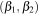 location where the loss function is minimum, which is where training for a non-regularized linear regression model would put them. Each curved contour line represents the same loss function value, and the closer the contour lines, the steeper the slope across those lines. (Recall these are projections of a 3D bowl or taco shaped surface onto a two-dimensional plane.)
| (a) L1 Constraint Diamond | (b) L2 Constraint Circle |
|---|---|

|

|
Because the minimum location is outside the constraint regions, we know that the regularized coefficients will sit on the constraint boundaries somewhere. We have to find the point on the boundary that has the lowest loss function value. Keep in mind that, for this special case where is much more predictive, even small changes in could give big swings in the loss function value. On the other hand, we could move pretty far up and down without affecting loss function value very much. A good strategy is, therefore, to optimize the most sensitive parameter first.
Let's optimize the L1 case in Figure 3.2 (a) first. I claim that the optimal location is the purple dot at the diamond tip. To show this is true, all I have to do is prove to you that any movement of away from that spot increases the loss. Take a look at the dashed contour line, emanating from the purple dot. The associated ellipse has the same loss value at all locations. Any position outside of that ellipse, away from the black dot, has higher loss; any inside that ellipse have lower loss. Any movement along the diamond edge, away from the purple dot, increases the loss because immediately moves outside of the dashed contour.
For the L2 case in Figure 3.2 (b), I claim that the optimal location is at the new purple dot location, not on the axis like the L1 case. Please keep in mind that there are an infinite number of contour lines, and so there is a contour line that exactly meets the purple dot. It's just not shown to prevent over-drawing. The ellipse associated with the dashed contour again represents the same loss function value along its extent, and any outside of that ellipse will have higher loss. That means any movement of along the circular constraint boundary pulls it away from the contour of the purple dot towards higher loss values. That is why the orange dots cannot represent the optimal regularized position.
At least for this case, L1 gets a zero coefficient, 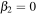, whereas, L2 does not. The L1 and L2 constraint is exactly the same length and the loss function is exactly the same, but we can see that L2's purple dot is far from the axis. To convince you that L2 has a harder time getting a zero coefficient, let's zoom in even further, but this time with a loss function optimal location much closer to the axis, as shown in Figure 3.3.
For the L1 case, the key is to notice that no matter how we move , the loss immediately goes up because the sharp backward angle of the diamond forces movement away from the black dot. For L2, the constraint circle is almost a completely vertical line for a very short distance. That means that we can move upwards, departing from the contour line, and getting closer to the black dot with no or very little leftwards movement. As the black dot loss function minimum approaches the axis, the L2 purple dot will approach the axis. In contrast, L1 gets to even when the black dot is far from the axis.
This is been a long road, but I hope I've convinced you that there is empirical evidence that L1 is more likely to get zero coefficients than L2, and there is a straightforward explanation! I think mathematicians understand intuitively why this is true, but I've never seen a decent explanation. I think Figure 3.3 nails it.